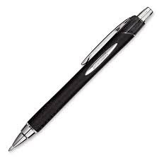

Je bent mijn zielsverwant, eentje dat mijn hart verwarmd. Je bent mijn trouwe met gezel, Denk nooit, zonder mij red ze het wel. Je bent onmisbaar in mijn leven, daarom zijn we ook beste vrienden. Je bent een steun en toe verlaat, ik wil niet dat je uit mijn leven gaat. Je bent degene die ik nodig heb, met jou is het altijd dikke pret. Je bent degene waar ik op kan rekenen, iemand die me nog nooit in de steek heeft gelaten. Je bent degene die me raad geeft, Ben blij dat je mee in mijn hart leeft. Ik heb je nodig, jij bent niet overbodig. Onze vriendschap is me veel waard, blijf voor altijd, mijn steun & toeverlaa
Je bent mijn zielsverwant, eentje dat mijn hart verwarmd. Je bent mijn trouwe met gezel, Denk nooit, zonder mij red ze het wel. Je bent onmisbaar in mijn leven, daarom zijn we ook beste vrienden. Je bent een steun en toe verlaat, ik wil niet dat je uit mijn leven gaat. Je bent degene die ik nodig heb, met jou is het altijd dikke pret. Je bent degene waar ik op kan rekenen, iemand die me nog nooit in de steek heeft gelaten. Je bent degene die me raad geeft, Ben blij dat je mee in mijn hart leeft. Ik heb je nodig, jij bent niet overbodig. Onze vriendschap is me veel waard, blijf voor altijd, mijn steun & toeverlaa
Je bent mijn zielsverwant, eentje dat mijn hart verwarmd. Je bent mijn trouwe met gezel, Denk nooit, zonder mij red ze het wel. Je bent onmisbaar in mijn leven, daarom zijn we ook beste vrienden. Je bent een steun en toe verlaat, ik wil niet dat je uit mijn leven gaat. Je bent degene die ik nodig heb, met jou is het altijd dikke pret. Je bent degene waar ik op kan rekenen, iemand die me nog nooit in de steek heeft gelaten. Je bent degene die me raad geeft, Ben blij dat je mee in mijn hart leeft. Ik heb je nodig, jij bent niet overbodig. Onze vriendschap is me veel waard, blijf voor altijd, mijn steun & toeverlaa
| Naam | Website |
|---|---|
| Rijm | Rijm |
| Gedachten Gedichten | Gedachten Gedichten |